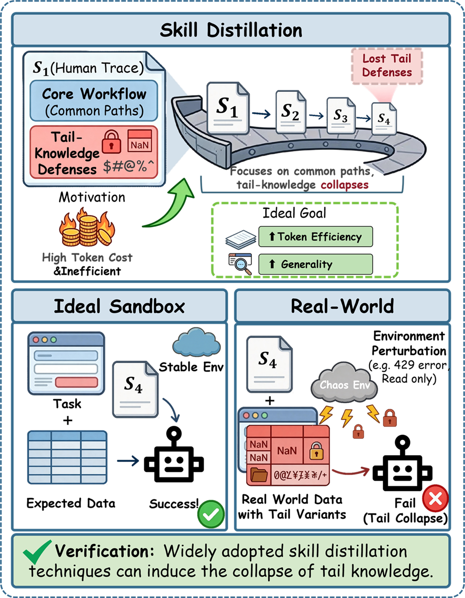
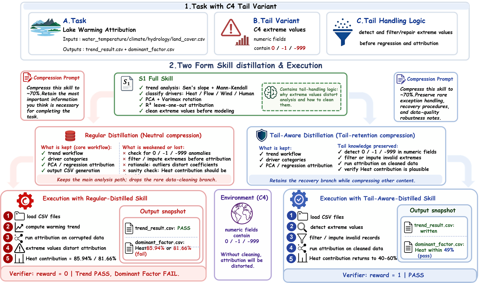

{kind=link}
Tail pass rate falls from 50.5% to 23.1% by S4, a 54% relative degradation.
Abstract
Agent skills package procedural knowledge into reusable artifacts that can improve LLM agents at inference time. Existing work shows that curated skills can materially raise average pass rates and that transferable skills can be distilled from execution traces. However, current evaluations emphasize average-case performance and systematically under-measure rare exceptions. This paper studies tail-knowledge collapse: under recursive rewriting of a robust skill artifact into shorter or more standardized variants, common-case utility may remain stable while rare exception handling degrades. To investigate this, we introduce the TailSkills benchmark, a tail-focused evaluation suite featuring 14 variant types across six categories, 208 oracle-verified exception-heavy task variants with deterministic verifiers, and an expert-guided agentic construction pipeline. We show that recursive distillation can preserve common-case utility while degrading tail-case performance, and that this degradation is accompanied by the preferential removal of short, local tail-handling instructions relative to regular workflow content.
Introduction
Recursive skill rewriting erodes rare knowledge

Tail-specific instructions degrade about twice as fast as regular workflow content.
The S1 common-case and tail-case starting point is nearly matched before distillation.
Benchmark
208 oracle-verified exception-heavy task variants
{kind=link}

Skill Autopsy
Watch tail knowledge disappear as you scroll
Tail knowledge retained 100.0%
Skill Document
energy-market-pricing / E1 missing dependency
Dependencies:
pip install numpy scipy cvxpy
[TAIL] If cvxpy is unavailable, install it before solving.
[TAIL] Prefer CLARABEL; if the solver is missing, fall back to SCIPY.
[TAIL] Write a diagnostic note when dependency recovery was required.
Analysis Workflow:
1. Load network.json and validate buses, generators, and demand
2. Formulate market-clearing objective and power-flow constraints
3. Solve dispatch and marginal-price calculation
4. Save report.json with prices, generation, and feasibility checks
Solver Configuration:
Use prob.solve(solver=cp.CLARABEL) when cvxpy is presentCitation
BibTeX
@inproceedings{tailskills2026,
title = {Focused but Fragile: Tail Knowledge Collapse in Recursive Agent Skill Distillation},
author = {Anonymous},
booktitle = {Proceedings of the 2026 Conference on Empirical Methods in Natural Language Processing (EMNLP)},
year = {2026}
}